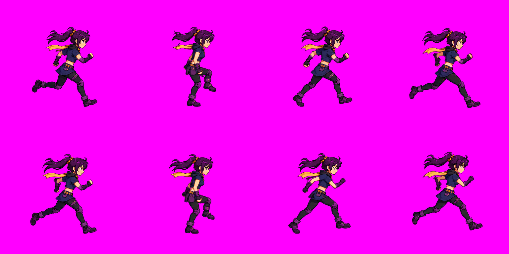

<!doctype html>
<html lang="ja">
<meta charset="utf-8">
<meta name="viewport" content="width=device-width,initial-scale=1">
<title>8コマ走行ループ確認</title>
<style>
*{box-sizing:border-box}body{margin:0;background:#141726;color:#f3eee4;font:16px system-ui,sans-serif}main{max-width:1050px;margin:auto;padding:28px 20px}h1{font-size:23px;margin:0 0 8px}p{color:#b4b7c7;line-height:1.7}section{display:grid;grid-template-columns:minmax(260px,1fr) minmax(230px,.8fr);gap:28px;align-items:center}.stage{position:relative;aspect-ratio:1;background-color:#f3eee4;border-radius:16px;overflow:hidden;background-image:linear-gradient(45deg,#e6e0d7 25%,transparent 25%),linear-gradient(-45deg,#e6e0d7 25%,transparent 25%),linear-gradient(45deg,transparent 75%,#e6e0d7 75%),linear-gradient(-45deg,transparent 75%,#e6e0d7 75%);background-size:32px 32px;background-position:0 0,0 16px,16px -16px,-16px 0}canvas{width:100%;height:100%;display:block}.ground{display:none;position:absolute;top:84%;width:100%;height:1px;background:#65597d88;pointer-events:none}.stage.guides .ground{display:block}.stage.guides:after{content:"";position:absolute;left:50%;height:100%;width:1px;background:#65597d66;top:0;pointer-events:none}button,select{background:#292e46;color:#f3eee4;border:1px solid #565d83;border-radius:9px;padding:10px 15px;font:inherit;cursor:pointer}button:hover{background:#404867}button.active{border-color:#e5c46c;background:#51432c}.controls{display:flex;gap:8px;flex-wrap:wrap;margin:16px 0}label{display:block;margin:18px 0 8px}input[type=range]{width:100%;accent-color:#e5c46c}output{color:#e5c46c}.strip{display:grid;grid-template-columns:repeat(8,1fr);gap:8px;margin-top:24px}.strip button{padding:4px;overflow:hidden;background:#eee8dc;color:#433749}.strip img{display:block;width:100%;height:auto}.sheet{display:block;max-width:100%;margin-top:16px;border-radius:10px}a{color:#e5c46c}small{color:#b4b7c7}@media(max-width:650px){section{grid-template-columns:1fr}.strip{grid-template-columns:repeat(4,1fr)}main{padding:20px 14px}}
</style>
<main>
<h1>8コマ走行ループ</h1>
<p>その場で走る動きと、8 → 1 のつながりを確認できます。</p>
<section>
<div class="stage" id="stage"><canvas width="384" height="384" id="canvas" aria-label="走行アニメーション"></canvas><div class="ground"></div></div>
<div>
<output id="status">読み込み中</output>
<div class="controls"><button id="play" disabled>一時停止</button><button id="prev" disabled>← 前のコマ</button><button id="next" disabled>次のコマ →</button></div>
<label for="fps">速度　<output id="speed">12.5 fps</output></label>
<input id="fps" type="range" min="2" max="24" step="0.5" value="12.5">
<label><input id="guides" type="checkbox"> 骨盤の中心線・接地ラインを表示</label>
<label for="background">背景</label><select id="background"><option value="checker">透過チェッカー</option><option value="#f3eee4">明るい背景</option><option value="#24283c">暗い背景</option><option value="#ff00ff">マゼンタ</option></select>
<p><small>接地するコマは 1・2・3・5・6・7。4・8 は空中。サムネイルを押すと、そのコマで停止します。</small></p>
<a href="run-loop.gif">通常速度 GIF</a> · <a href="run-loop-slow.gif">低速 GIF</a>
</div>
</section>
<div class="strip" id="strip"></div>
<details><summary>2行×4列のマゼンタ背景シート</summary></details>
</main>
<script type="module">
const canvas=document.querySelector('#canvas'),ctx=canvas.getContext('2d');
const stage=document.querySelector('#stage'),status=document.querySelector('#status');
const play=document.querySelector('#play'),prev=document.querySelector('#prev'),next=document.querySelector('#next');
const fpsInput=document.querySelector('#fps'),speed=document.querySelector('#speed');
const images=await Promise.all(Array.from({length:8},(_,i)=>new Promise((resolve,reject)=>{const img=new Image();img.onload=()=>resolve(img);img.onerror=()=>reject(new Error('コマ画像の読み込みに失敗しました'));img.src=`frame-${String(i+1).padStart(2,'0')}.png`;})));
let frame=0,playing=true,fps=12.5,last=performance.now(),accumulator=0;
const buttons=[];
function draw(){ctx.clearRect(0,0,384,384);ctx.drawImage(images[frame],0,0);status.textContent=`${frame+1} / 8 コマ · ${[3,7].includes(frame)?'空中':'接地'}`;buttons.forEach((b,i)=>b.classList.toggle('active',i===frame));}
function pause(){playing=false;play.textContent='再生';accumulator=0;}
images.forEach((img,i)=>{const button=document.createElement('button');button.setAttribute('aria-label',`${i+1}コマ目を表示`);button.append(img.cloneNode());button.append(document.createTextNode(String(i+1)));button.onclick=()=>{pause();frame=i;draw();};buttons.push(button);document.querySelector('#strip').append(button);});
play.disabled=prev.disabled=next.disabled=false;
play.onclick=()=>{playing=!playing;play.textContent=playing?'一時停止':'再生';accumulator=0;last=performance.now();};
prev.onclick=()=>{pause();frame=(frame+7)%8;draw();};next.onclick=()=>{pause();frame=(frame+1)%8;draw();};
fpsInput.oninput=()=>{fps=Number(fpsInput.value);speed.textContent=`${fps} fps`;accumulator=0;};
document.querySelector('#guides').onchange=e=>stage.classList.toggle('guides',e.target.checked);
document.querySelector('#background').onchange=e=>{stage.style.backgroundImage=e.target.value==='checker'?'':'none';stage.style.backgroundColor=e.target.value==='checker'?'#f3eee4':e.target.value;};
document.addEventListener('visibilitychange',()=>{last=performance.now();accumulator=0;});
function animate(now){const elapsed=Math.min(now-last,200);last=now;if(playing){accumulator+=elapsed;const steps=Math.floor(accumulator/(1000/fps));if(steps){frame=(frame+steps)%8;accumulator-=steps*(1000/fps);draw();}}requestAnimationFrame(animate);}
draw();requestAnimationFrame(animate);
</script>
</html>
